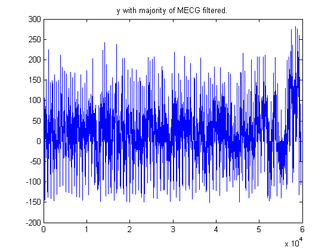

Contents
- Project HW 4.
- These are primarily tests visualization exercises;
- creating band pass filter for 10Hz<=f <=49Hz, as suggested by the algorithm. (10/500-49/500);
- filtered output in time domain (sec);
- FIltering the MECG
- n0=1420;n1=1500; %1420-1500;% 8120-8240;
- Finding peaks and producing model for MECG filter
- main filtering procedure;
- Cancelling MECG with the model above.
- Below is the display of the peaks of the FECGs
- Below, we reuse the devised algorithm to separage the FECG.
Project HW 4.
Luiz Medeiros
clear,close all,clc; load r01_edfm; plotATM('r01_edfm'); zoom xon;

These are primarily tests visualization exercises;
fs=1000; sr=1/fs; k=1; strN=''; x=[]; for n=2:5 strN=num2str(n); x(k,:)=val(n,:); t=0:1/fs:(length(x)-1)/fs; nfft=2048; % Defining an nfft to perform the fft . fx(k,:)=fft(x(k,:),nfft);% performing the fft %X(k,:)=fx(k,1:nfft/2); afx(k,:)=abs(fx(k,1:nfft/2)); % achieving absolute value of the fft ; f=(0:(nfft-1)/2)*sr/nfft*2*pi*fs; % defining the discrete frequency domain based on the nfft point DFT. % figure iteration number. figure, subplot(211),plot(t,x(k,:)), title (['EEG sig x vs t ',strN]),xlabel('time (sec)'), subplot(212),plot(f,20*log10(afx(k,:))),title(['abs value of the fft of x, n= ',strN]),xlabel('omega'),ylabel('abs(X)'); k=k+1; end

creating band pass filter for 10Hz<=f <=49Hz, as suggested by the algorithm. (10/500-49/500);
b=fir1(48,[0.02 0.098]); w0=25/fs*2*pi; % suggested stop band. w=[(w0-0.001) (w0+0.001)]; b2=fir1(48,[w],'stop'); H2=freqz(b2,1,nfft); H=freqz(b,1,nfft); figure, grid minor, plot(f,20*log10(abs(H(1:nfft/2,1)))); title('dB of the filters and magH');

filtered output in time domain (sec);
clear y k; y=[]; for k=1:4 y(k,:)=filter(b2(1,:),1,x(k,:)); %k; end for k=1:4 y(k,:)=filter(b(1,:),1,x(k,:)); %k; end strN='Band pass 0.5Hz <= f domain <= 49Hz;'; figure, plot(t,y),title (['EEG sig y vs t; AECG # ',strN]),xlabel('time (sec)'); k=1; strN=''; for n=2:5 strN=num2str(n); nfft=2048; % Defining an nfft to perform the fft . fy(k,:)=fft(y(k,:),nfft);% performing the fft %X(k,:)=fx(k,1:nfft/2); afy(k,:)=abs(fy(k,1:nfft/2)); % achieving absolute value of the fft ; f=(0:(nfft-1)/2)*sr/nfft*2*pi*fs; % defining the discrete frequency domain based on the nfft point DFT. % figure iteration number. figure, subplot(211),plot(t,y(k,:)), title (['EEG sig y vs t; AECG # ',strN]),xlabel('time (sec)'), subplot(212),plot(f,20*log10(afy(k,:))),title(['abs value of the fft of y, n= ',strN]),xlabel('omega'),ylabel('abs(X)'); k=k+1; end % Now, for each AECG In the frequency domain. % strK=''; % H=H'; % for k=1:4 % % strK=num2str(k); % aH=abs(H); % % YY(k,:)=fx(k,:).*H(1,:); % aY(k,:)=abs(YY(k,:)); % abs(H) * abs(fx); % figure, % plot(f,20*log10(aY(k,1:nfft/2))), title(['dB of the abs(Y); k= ',strK]),ylabel('dB Y'),xlabel('omega'), % figure,plot(f,YY(k,1:nfft/2)),title(['graph of Y vs omega; k= ',strK]),ylabel('Y'),xlabel('omega'),legend(['ACEG ',strK]); % end % strK='ALL'; % figure, % plot(f(1,1:length(f)/4),20*log10(aY(:,1:length(f)/4))), title(['dB of the abs(Y); k= ',strK]),ylabel('dB Y'),xlabel('omega'), % figure,plot(f(1,1:length(f)/4),YY(:,1:length(f)/4)),title(['graph of Y vs omega; k= ',strK]),ylabel('Y'),xlabel('omega'),legend(['ACEG ',strK]); %
FIltering the MECG
%close all; clear ym2; ym2=[]; mY=[]; for k=1:4 mY=mean(y(k,:)); ym2(k,:)=y(k,:)-mY; figure,plot(ym2(k,:)), title(['y - mean(y) for AECG #',num2str(k)]); end % ym2(1,:)=mean(y(1,:)); % ym2=y(1,:)-ym2; % figure,plot(ym2), title('y - mean(y)'); % ym2Sample=ones(1,length(ym2)); % n0=688;n1=808;n2=690; % ym2s=ones(1,690); % ym2s=ym2(1:690); % ym2s(1,81:690)=0; % n=[]; % ym2Sample(1,1:n2)=ym2s(1,1:n2); % ym2Sample(1,n2+1:1380)=ym2s(1,1:n2); % for k=2:84 % k0=(k-1)*n2; % k1=k*n2; % ym2Sample(1,k0+1:k1)=ym2s(1,1:n2); % % end % ym2Sample=-1*ym2Sample; % ym5=ym2+ym2Sample; % figure,plot(ym5)
n0=1420;n1=1500; %1420-1500;% 8120-8240;
n0=1;n1=80; for k=1:4 tx(k,:)=ym2(k,n0:n1); ltx(1,k)=length(tx(k,:)); %figure,plot(tx(k,:)),title('sample zoom of epoch to choose'); end % Each epoch is about 80 samples long. clear b; a=1; for k=1:4 b(k,:)=fliplr(tx(k,:)); yy(k,:)=filter(b(k,:),a,ym2(k,:)); figure,subplot(2,1,1),plot(b(k,:)),title(['flipped lr chosen epoch, # ',num2str(k)]); subplot(2,1,2),plot(yy(k,:)),title(['filtered ECG with chose MECG Epoch, # ',num2str(k)]); end %b=fliplr(tx);% figure,plot(b),title('flipped lr chosen epoch'); %b=flipud(tx);% figure,plot(flipud(-tx')),title('flipped up chosen epoch'); %autotx=xcorr(tx); %figure,plot(autotx),title('AutoCorrelation of chosen epoch'); %convtx=conv(tx,b); %figure,plot(convtx),title('convolution of chosen epoch with it s opposite'); %yy=filter(b,a,ym2); %figure,plot(yy),title('filtered ECG with chose MECG Epoch'); %figure,plot(yy(1,n0:n1)),title('filtered ECG with chose MECG Epoch'); %yy2=filter(convtx,a,ym2); %figure,plot(yy2),title('filtered ECG with chose MECG Epoch'); %yy3=ym2+yy/1e5; figure,plot(yy3(1,:)); %figure,plot(t,yy,'b*',t,yy2,'ro'); %figure,plot(yy3); %yy4=yy-yy3; %figure,plot(yy4);
Finding peaks and producing model for MECG filter
clear x;clear fc; fc=ym2(1,:); % setting my own variable to the signal captured in channel 1; % fc= first channel; This is for showing a simplified solution first. %fc=yy5; I=find(fc<-0); % This is done so to initially identify the large MECG, % since our a priori information dictates that extend quite significantly % into the negative range of values. n=1; % our main iterative variable while n<=length(I) threshold(n)=fc(I(n)); % here we have a the index and value setting. n=n+1; end threshold=2*mean(threshold); I=find(fc<threshold); % using the find function from matlab to help us find all of % the item that are above 1, where 1 is our treshold; %x=zeros(length(I)); x=zeros(length(fc),1); % here we initiate the first dummy var x, which will % contain all the values on their respective indexes coming from I; n=1; % our main iterative variable while n<=length(I) x(I(n))=fc(I(n)); % here we have a the index and value setting. n=n+1; end %figure,plot(fc),hold,plot(x,'r*'); % this was mainly for test purposes. n=1; % resetting our iterative variable to keep some consistency. mx=[];% denotes the maxima; first row is the spot, second is the value. s=1;v=2; % (s)pot, (v)alue; j=1; % our second iterative variable used; %this loop basically sets up the maxima array so we have maxima and %positions. while n<(length(x)-1) diff=x(n+1)/x(n)-1; % this is the logic we follow to find the where %there will be a minima or maxima is located. Basically where there occured a change of %sign change if diff<0 mx(s,j)=n; mx(v,j)=x(n); j=j+1; %n=n+1; %diff=x(n+1)/x(n)-1; %below is the iterative logic to get to the next positive position. while diff<=0 && n<(length(x)-1) diff=x(n+1)/x(n)-1; n=n+1; end else n=n+1; end end n=1; % we now create another dummy matrix to store only the maxima. % we then plot it against the original first channel samples. yy=ones(length(x),1); while n<length(mx) yy(mx(s,n))=mx(v,n); n=n+1; end figure, plot(t,fc); hold,plot(t,yy,'r*'),xlabel('Time t (tm)'), ylabel('Recorded Sample values'),title('Recorded Samples vs Time t'), legend('Sample Values','Maxima/Minima'); % our maxima are denoted as red stars.
Current plot held
main filtering procedure;
x=[]; n=1; nn=1; while n<=length(I) if I(n)>21 for nn=I(n)-10:I(n)-1 x(nn)=fc(nn); end end x(I(n))=fc(I(n)); % here we have a the index and value setting. n=n+1; end n=1;k=0; %x=x'; % Algorithm to reproduce the MECGs, to be later used for canceling % MECGs from the original signal. It copies the MECG and stores it in the % variable x; while n<length(x) % Traverse all x; if x(n)<0 && n>21 % First check if there is enough space before the current x(n) so to iterate backwards; k=0; while k<20 % until k is 20 samples before the current sample x(n-k)=fc(n-k); k=k+1; end n=n+1; k=0; while k<20 && (n+k)<length(x) % 20 samples after the current sample. x(n+k)=fc(n+k); k=k+1; end n=n+k; % updating the position of n; else n=n+1; % otherwise, just keep moving. end end %y5=fc+-1*x; %figure,plot(y5)
Cancelling MECG with the model above.
yfil=fc+-1*x; figure,plot(yfil),title('y with majority of MECG filtered.'); % Here we can see the result of this filtering process;
Below is the display of the peaks of the FECGs
clear x;clear fc; fc=yfil; % setting my own variable to the signal captured in channel 1; % fc= first channel; This is for showing a simplified solution first. %fc=yy5; I=find(fc>0); % This is done so to initially identify the large MECG, % since our a priori information dictates that extend quite significantly % into the negative range of values. n=1; % our main iterative variable while n<=length(I) threshold(n)=fc(I(n)); % here we have a the index and value setting. n=n+1; end threshold=2*mean(threshold); I=find(fc>threshold); % using the find function from matlab to help us find all of % the item that are above 1, where 1 is our treshold; %x=zeros(length(I)); x=zeros(length(fc),1); % here we initiate the first dummy var x, which will % contain all the values on their respective indexes coming from I; n=1; % our main iterative variable while n<=length(I) x(I(n))=fc(I(n)); % here we have a the index and value setting. n=n+1; end %figure,plot(fc),hold,plot(x,'r*'); % this was mainly for test purposes. n=1; % resetting our iterative variable to keep some consistency. mx=[];% denotes the maxima; first row is the spot, second is the value. s=1;v=2; % (s)pot, (v)alue; j=1; % our second iterative variable used; %this loop basically sets up the maxima array so we have maxima and %positions. while n<(length(x)-1) diff=x(n+1)/x(n)-1; % this is the logic we follow to find the where %there will be a minima or maxima is located. Basically where there occured a change of %sign change if diff<0 mx(s,j)=n; mx(v,j)=x(n); j=j+1; %n=n+1; %diff=x(n+1)/x(n)-1; %below is the iterative logic to get to the next positive position. while diff<=0 && n<(length(x)-1) diff=x(n+1)/x(n)-1; n=n+1; end else n=n+1; end end n=1; % we now create another dummy matrix to store only the maxima. % we then plot it against the original first channel samples. yy=ones(length(x),1); while n<length(mx) yy(mx(s,n))=mx(v,n); n=n+1; end figure, plot(t,fc); hold,plot(t,yy,'r*'),xlabel('Time t (tm)'), ylabel('Recorded Sample values'),title('Recorded Samples vs Time t'), legend('Sample Values','Maxima/Minima'); % our maxima are denoted as red stars.
Current plot held
Below, we reuse the devised algorithm to separage the FECG.
x=[]; n=1; nn=1; while n<=length(I) if I(n)>21 for nn=I(n)-10:I(n)-1 x(nn)=fc(nn); end end x(I(n))=fc(I(n)); % here we have a the index and value setting. n=n+1; end n=1;k=0; %x=x'; % Algorithm to reproduce the MECGs, to be later used for canceling % MECGs from the original signal. It copies the MECG and stores it in the % variable x; while n<length(x) % Traverse all x; if x(n)<0 && n>21 % First check if there is enough space before the current x(n) so to iterate backwards; k=0; while k<20 % until k is 20 samples before the current sample x(n-k)=fc(n-k); k=k+1; end n=n+1; k=0; while k<20 && (n+k)<length(x) % 20 samples after the current sample. x(n+k)=fc(n+k); k=k+1; end n=n+k; % updating the position of n; else n=n+1; % otherwise, just keep moving. end end figure, plot(x),title('FECG of the original AECG');